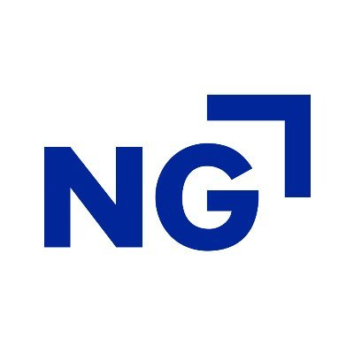

About Me
Interests
Web development
- Learning modern technologies
- Figuring out how to design a nice UI/UX
- Learning how to better work in a team
Personal
- Running, hiking, biking
- Mario Kart (Birdo main)
- Playing music (drums, piano, guitar)
Here is a highly visible interesting fact: I played drums in Joe Biden's Inaugural Parade
Work Experience
I wrote a bot in Typescript for the UD CIS Department's official Discord Server
I've been a TA for the UD CIS Department for about 3 years.
The courses I've TA'd for include:
The courses I've TA'd for include:
- CISC 108
- CISC 210
- CISC 181
- CISC 275

I interned at Northrop Grumman in summer of 2020 & 2021 doing Embedded Software Engineering